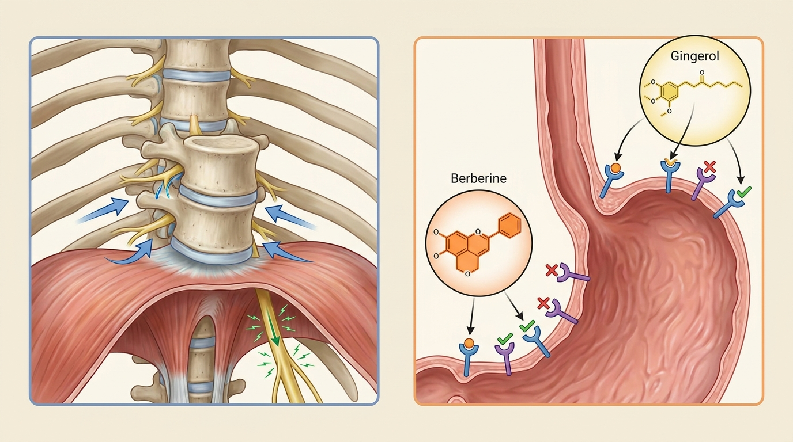

Epigastric Fullness and Recurrent Reflux Sensation May Originate from Thoracic Malalignment and Diaphragmatic Mobility Impairment - A Structural and Pharmacological Approach to Gastroesophageal Reflux Disease
Biomechanical malalignment of the costovertebral joints and thoracic kyphosis can impose mechanical restriction on the diaphragmatic crura and vagal afferent pathways, potentially influencing the regulation of lower esophageal sphincter (LES) tone. When this structural issue coexists with substance P-mediated visceral hypersensitivity and motilin-dependent peristaltic decline, an approach combining structural decompression with herbal pharmacological modulation is being meaningfully examined in academic discourse.
1. Structural Causes of Phlegm-Fluid Gastrointestinal Motility Disorder Related to Thoracic Segmental Displacement and Autonomic Nerve Blockage
Among patients experiencing persistent epigastric fullness and postprandial reflux sensation, a considerable number attribute their symptoms to simple gastric hyperacidity. However, clinical observation frequently reveals that biomechanical displacement of thoracic spinal segments functions as the underlying pathological axis. The costovertebral joints, where the thoracic vertebrae meet the ribs, serve as core articular structures responsible for thoracic cage expansion and contraction during respiration. When alignment at this region is disrupted or excessive thoracic kyphosis develops, normal articular motion of the rib cage and the associated diaphragmatic mobility become significantly impaired.
The diaphragm extends beyond its role as a simple respiratory muscle, forming the diaphragmatic crura that envelop the esophagogastric junction where the esophagus transitions from the thoracic to the abdominal cavity. This region constitutes a critical anatomical intersection where the vagal afferent and efferent pathways passing through it neurologically regulate lower esophageal sphincter tone. When chronic mechanical compression is applied to tissue surrounding the diaphragmatic crura due to thoracic segmental displacement, the regulatory signals governing the lower esophageal sphincter via the vagus nerve become distorted, resulting in abnormally frequent transient lower esophageal sphincter relaxations. This serves as a direct structural background contributing to reflux of gastric contents into the esophagus.
Furthermore, as thoracic kyphosis intensifies, the normal gradient between intra-abdominal and intra-thoracic pressure collapses, causing upward compression of abdominal organs and elevation of intragastric pressure, which acts as a mechanical stressor pushing the lower esophageal sphincter upward from below. This pressure imbalance is closely associated with diminished gastric smooth muscle peristalsis and upper abdominal distension characteristic of Phlegm-Fluid Syndrome (Damjeok Syndrome (Phlegm-Fluid Retention Pathology causing Impaired Gastrointestinal Motility)). It should be understood not merely as a functional issue confined to the stomach itself, but as a pathological process in which structural abnormality along the thoracic-costal-diaphragmatic axis extends into failure of autonomic regulation across the digestive system.
2. Fusion Treatment Principles for Restoring Celiac Plexus Microcirculation and Gastrointestinal Peristaltic Motility

To address the structural issues of gastroesophageal reflux disease arising from malalignment of the thoracic segments and costovertebral joints, an approach that first normalizes mechanically compressed neural and vascular pathways must precede other interventions. Biomechanical Spatial Spinal Decompression Chuna Therapy (SART Protocol) aims to microscopically secure the space between thoracic segments and restore normal range of motion at the costovertebral joints, thereby reviving compressed thoracic articular mobility and diaphragmatic mobility. Throughout this process, chronic compression exerted on the vagal conduction pathway traversing the diaphragmatic crura is relieved, and as the thoracic-abdominal pressure gradient normalizes, the continuous mechanical stress applied to the esophagogastric junction can be directed toward reduction.
Once neural conduction and local microcirculation are improved through structural decompression, an environment is established atop this secured neurovascular foundation in which bioactive herbal constituents can be efficiently delivered to gastrointestinal tissue and bind with their target receptors. Banxia Xiexin Decoction is primarily composed of berberine derived from Coptis Rhizome, gingerol and shogaol from ginger, and Pinellia Tuber extract. The mechanism by which these constituents suppress substance P-mediated esophageal visceral hypersensitivity and normalize motilin-dependent gastric and esophageal peristalsis is explained as harmonizing upper abdominal distension associated with mixed cold-heat pathology.
Reviewing accumulated clinical experience in functional gastrointestinal motility disorders and phlegm-fluid retention pathology at Bodyall Korean Medicine Clinic, a recurring clinical trend of restoring gastrointestinal motility and improving abdominal distension has been observed following thoracic and costovertebral joint decompression. This macroscopic clinical trend aligns scientifically with an academic study[1] demonstrating that costovertebral joint decompression may improve vagal conduction and esophagogastric junction microcirculation, thereby participating in the regulation of lower esophageal sphincter pressure, and its biomechanical mechanism is substantiated accordingly. This structural mechanism concerning thoracic and costovertebral joint neural decompression is scientifically explained through the cited academic study[1], and based on this objective mechanism, Bodyall Korean Medicine Clinic systematically applies the Biomechanical Spatial Spinal Decompression Chuna Therapy (SART Protocol) combined with a Phlegm-Fluid Motility Protocol as an integrated clinical pathway.
| Comparison Criteria | Conventional Antacid/Digestive Aid Treatment | Biomechanical Spatial Spinal Decompression Chuna Therapy (SART Protocol) & hGMP-Standard Tailored Korean Herbal Medicine |
|---|---|---|
| Target of Approach | Gastric acid secretion volume and chemical environment within the gastrointestinal tract | Thoracic and costovertebral joint structure, vagal conduction pathway, and concurrent herbal pharmacological constituents |
| Mechanism of Action | Symptomatic regulation primarily via gastric acid neutralization or secretion suppression | Restoration of diaphragmatic mobility and lower esophageal sphincter pressure regulation, combined with substance P/motilin modulation |
| Structural Cause Correction | Not addressed | Fundamental structural approach via correction of thoracic kyphosis and costovertebral joint malalignment |
| Normalization of Peristalsis | Limited | Concurrent normalization mechanism for gastric and esophageal peristalsis based on Banxia Xiexin Decoction |
3. Academic and Clinical Literature Analysis on Costovertebral Joint Biomechanical Malalignment and Banxia Xiexin Decoction Pharmacological Mechanisms
Academic studies illuminating the pathophysiology of gastroesophageal reflux disease from the dual axes of the neuromusculoskeletal system and herbal pharmacology suggest that thoracic structural abnormality and digestive pharmacological regulation may form a mutually complementary relationship. A study addressing the effect of manual manipulative intervention on the clinical course of gastroesophageal reflux disease patients reported findings consistent with the biomechanical hypothesis that costovertebral joint and thoracic kyphotic alignment may participate in regulating lower esophageal sphincter function. Structural malalignment of thoracic spinal segments and costal articulations imposes mechanical restriction on the diaphragmatic crura and the vagal afferents traversing this region, substantiating the theoretical basis for a vagally-mediated influence on lower esophageal sphincter tone regulation. This suggests that correcting costovertebral joints and thoracic kyphosis through Biomechanical Spatial Spinal Decompression Chuna Therapy (SART Protocol) may function as a structural mechanism contributing to reduced frequency of transient lower esophageal sphincter relaxations, by normalizing the thoracic-abdominal pressure gradient and relieving chronic mechanical stress at the esophagogastric junction[1].
Alongside academic discussion suggesting that this manual therapeutic approach can modulate the neuromusculoskeletal axis of gastroesophageal reflux disease pathophysiology, a systematic meta-analysis on the clinical efficacy of Banxia Xiexin Decoction presents noteworthy evidence from the herbal pharmacological perspective. A study demonstrating that Banxia Xiexin Decoction achieved statistically significant improvement in chest pain and sternal burning sensation compared to control groups across 12 randomized controlled trials substantiates the potential of hGMP-Standard Tailored Korean Herbal Medicine bioactive constituents to modulate esophagogastric motor function. Berberine derived from Coptis Rhizome, gingerol and shogaol from ginger, and Pinellia Tuber extract—the constituent herbs of Banxia Xiexin Decoction—correspond mechanistically to suppressing substance P-mediated esophageal visceral hypersensitivity and normalizing motilin-dependent gastric and esophageal peristalsis, thereby harmonizing upper abdominal distension in mixed cold-heat pathology[2].
Comprehensively reviewing both studies, it can be understood as complementary evidence suggesting that, upon the structural foundation of improved vagal conduction and esophagogastric junction microcirculation secured through costovertebral joint and thoracic kyphosis decompression, the gastroesophageal bioavailability and pharmacological efficacy of Banxia Xiexin Decoction's active constituents may be optimized. In other words, structural decompression normalizes the neurovascular delivery pathway to establish an environment in which herbal constituents can effectively reach target tissue, while the pharmacological action of Banxia Xiexin Decoction performs a complementary role by regulating visceral hypersensitivity and peristaltic imbalance that are difficult to resolve through structural correction alone.
4. Bodyall Biomechanical Spatial Spinal Decompression Chuna Therapy (SART Protocol) and Phlegm-Fluid Digestive Treatment Solution
Bodyall Korean Medicine Clinic's approach to gastroesophageal reflux disease is designed from an integrated perspective combining structural alignment restoration of the thoracic spine and costovertebral joints with herbal pharmacological modulation tailored to individual constitution. The clinical protocol is structured in sequence: first, correcting thoracic kyphotic alignment and restoring costovertebral joint articular mobility through Biomechanical Spatial Spinal Decompression Chuna Therapy (SART Protocol) to normalize diaphragmatic mobility, followed by adjusting a Banxia Xiexin Decoction-based formulation via hGMP-Standard Tailored Korean Herbal Medicine according to the individual's constitutional cold-heat bias and pathological pattern.
This integrated approach holds academic significance in that it can illuminate, from multiple angles, the complex pathological axis that is difficult to resolve through a single mechanism alone in gastroesophageal reflux disease and phlegm-fluid digestive disorders where structural issues and functional digestive imbalance coexist. Bodyall Korean Medicine Clinic comprehensively evaluates each individual's thoracic alignment status and constitutional characteristics, operating the Phlegm-Fluid Digestive Treatment Solution by individualizing the sequence and intensity of structural decompression and herbal pharmacological modulation.
Based on academic evidence that structural malalignment of the costovertebral joints and thoracic kyphosis can function as a neuromusculoskeletal pathological axis of gastroesophageal reflux disease, Bodyall Korean Medicine Clinic applies a Phlegm-Fluid Digestive Treatment Solution in clinical practice, combining Biomechanical Spatial Spinal Decompression Chuna Therapy (SART Protocol) with Banxia Xiexin Decoction-based hGMP-Standard Tailored Korean Herbal Medicine.
Structural decompression of the thoracic spine and costovertebral joints is academically explained as a structural mechanism contributing to restored diaphragmatic mobility and neural regulation of the lower esophageal sphincter; however, functional issues such as substance P-mediated visceral hypersensitivity and motilin-dependent peristaltic decline may require separate pharmacological modulation. Accordingly, Bodyall Korean Medicine Clinic operates an integrated protocol combining structural decompression with Banxia Xiexin Decoction-based herbal pharmacological modulation based on academic evidence.
References
- Bjørnæs, et al. (2016), 'Does Osteopathic Manipulative Treatment (OMT) have an Effect in the Treatment of Patients Suffering from Gastro Esophageal Reflux Disease (GERD)?', International Journal of Clinical Pharmacology & Pharmacotherapy. DOI: 10.15344/2456-3501/2016/116
- Dai, et al. (2017), 'Efficacy and Safety of Modified Banxia Xiexin Decoction (Pinellia Decoction for Draining the Heart) for Gastroesophageal Reflux Disease in Adults: A Systematic Review and Meta‐Analysis', Evidence-Based Complementary and Alternative Medicine. DOI: 10.1155/2017/9591319